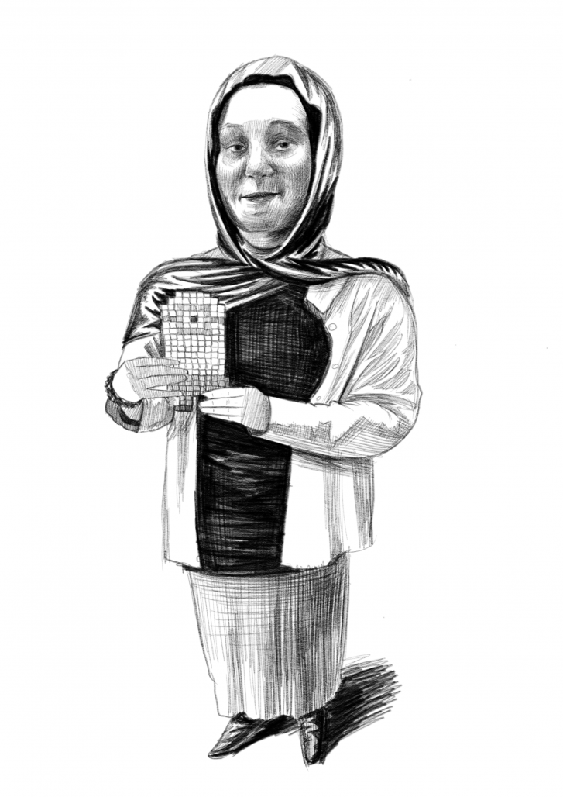

Işığı renge dönüştür — Bakırköy'de vitray atölyesi
Camı kendi ellerinle kes, bakır folyoyla sar, lehimle ve arkadan ışıklı ilk vitray eserini eve götür. 2008'den beri Bakırköy Zeytinlik'te; MEB onaylı, Mimar Sinan mezunu eğitmenlerle, tüm malzeme atölyeden. Tiffany tekniğini sıfırdan, güvenle ve keyifle öğreniyoruz — kursu bitiren eli boş dönmez.

- Süre
- 4-8 hafta · modüler
- Haftalık
- 1 gün · 2,5-3 saat
- Seviye
- Sıfırdan dostu · 16+
- Format
- Küçük grup + birebir tezgah
- Materyal
- Cam · folyo · lehim dahil
- Öğrenilen Teknik
- Tiffany + kurşun profil tanıtımı
Bu atölye sana göre mi?
Sıfırdan başlayan yetişkin
Hiç cam kesmemiş olabilirsin; ilk dersten itibaren elmas keskiyi güvenle kullanmayı adım adım öğretiyoruz.
El işine ve zanaata meraklı
Seramik, ahşap ya da takı gibi el sanatlarını sevenler için camla üretmenin en tatmin edici hâli.
Ekrandan uzaklaşmak isteyen
Camı kesip lehimlemek odak ve sükûnet veren, meditatif bir üretim; dönem sonunda elinde ışıklı bir eser olur.
Evine özgün cam obje isteyen
Pencere panosu, Tiffany abajur, dekoratif ayna veya sarkıt: kendi tasarımını kendi ellerinle yaparsın.
"Elim yatkın değil, camı keserken kendimi keserim" diye çekiniyorsan — cam kesimi doğuştan yetenek değil, doğru baskı ve güvenli kullanımla öğrenilen bir tekniktir.
Adım adım Tiffany müfredatı
Camdan ışıklı esere; her aşamayı tezgah başında, eğitmen eşliğinde uyguluyorsun. Ne öğreneceğini saklamıyoruz.
1 · Giriş & cam tanıma
Vitray teknikleri, cam çeşitleri (katedral, opal, tekstürlü), atölye güvenliği, desen okuma ve şablon hazırlama.
2 · Cam kesim
Cam elması (keski) ile düz ve kavisli hat kesimi, kırma pensesiyle şekillendirme, iç kavis ve zor formlar.
3 · Taşlama & uyum
Grinder ile kenar rötuşu; parçaların şablona milimetrik oturtulması ve pürüzsüz güvenli kenar.
4 · Bakır folyolama
Her parçanın kenarını bakır folyoyla sarma, fırçalayıp bastırma ve kompozisyonu tezgahta dizme.
5 · Lehimleme
Flux (lehim suyu) sürme, havyayla nokta lehim ve dolgun "boncuk" lehim (beading) tekniği, iki yüz tamamlama.
6 · Patina & bitiş
Patina solüsyonuyla lehime renk verme, temizlik-polisaj, çerçeve ve askı montajı.
İleri modül
3B Tiffany abajur/lamba yapımı, kurşun profil tekniğiyle büyük pencere panosu ve füzyon fırını tanıtımı.
★ Işıklı eserini eve götür
Her öğrenci dönem sonunda arkadan ışıklandırılabilen, kendi tasarımı bir vitray eseri baştan sona bitirir.
Tam donanımlı bir cam atölyesi
2008'den Beri 18 Yıl
Bakırköy'ün en köklü sanat atölyelerinden; kıdem değil, oturmuş ve güvenilir bir kurum.
MEB Onaylı Kurum
Resmi ruhsatlı, denetlenen özel öğretim kurumunda güvenle üretirsin.
Tam Donanımlı Cam Atölyesi
Profesyonel grinder, havyalar, cam stoğu ve tüm sarf malzeme atölyede — evde kurulum derdi yok, gel ve üret.
Küçük Grup · Birebir İlgi
Herkes kendi tezgahında; eğitmen kesimden lehime her aşamada yanında.
Somut Çıktı
Kursu bitiren eli boş dönmez: arkadan ışıklı kendi eserini eve götürür.
Ücretsiz Deneme Dersi
Risksiz başla: bağlanmadan önce camı ilk kez kes, atölyeyi gör, kadroyla tanış. Kaçırılan ders için telafi imkanı vardır.
Vitray nasıl yapılır?
Cam kesiminden arkadan ışıklı esere; atölyemizde bir vitrayın doğuş sürecini adım adım gör. Görsele tıklayarak büyütebilirsin.
Kimlerle çalışacaksın

Mimar Sinan Üniversitesi mezunu eğitmenler
Vitray atölyemize, Mimar Sinan Güzel Sanatlar Üniversitesi mezunu ve yıllara dayanan cam sanatı deneyimine sahip eğitmenler eşlik eder. Tiffany ve kurşun profil tekniklerini hem sanat hem güvenli bir zanaat olarak, her aşamayı tezgah başında birebir göstererek öğretiriz. MEB onaylı kurumda, alanında mezun bir kadroyla çalışırsın.
Deneme dersinden ışıklı esere
Ücretsiz Deneme Dersi
Atölyeye gel, camı ilk kez kes, kadroyla tanış.
Hedefini Belirle
Hobi mi, yoksa belirli bir obje (abajur, pano, ayna) mi; seviyeni birlikte netleştirelim.
Program & Esnek Gün
Hafta içi/hafta sonu seçenekleriyle sana uygun gün ve tempoda başlarsın.
Aşamaları Uygula
Cam kesimden lehime her aşamayı eğitmen eşliğinde yapar, düzenli geri bildirim alırsın.
Eserini Tamamla
Patina ve montajla arkadan ışıklı ilk vitrayını bitirir, eve götürürsün.
Deneyimler şeffafça paylaşılıyor
Öğrencilerimizin ve velilerimizin gerçek yorumlarını Instagram ve Google üzerinden açıkça paylaşıyoruz. En doğrusu ise atölyeyi ve öğrenci çalışmalarını kendi gözünle görmek — ücretsiz deneme dersine bekleriz.
Öğrencilerimiz bunları merak ediyor
Kesinlikle. Öğrencilerimizin büyük çoğunluğu daha önce hiç cam kesmemiş yetişkinler. İlk dersten itibaren cam elmasını (keski) ve kırma pensesini doğru baskıyla, güvenle kullanmayı adım adım öğretiyoruz. Vitray doğuştan yetenek değil, öğrenilen bir tekniktir — deneme dersinde ilk kesimini kendin yapacaksın.
Doğru teknikle vitray güvenli bir zanaattır. Camı kesmiyoruz, yüzeyini "çiziyoruz" ve kontrollü şekilde kırıyoruz; keskin kenarlar grinder (taşlama) ile hemen pürüzsüzleştiriliyor. Lehim ve patina aşamasında eldiven ve maske kullanılır. Eğitmen tüm güvenlik kurallarını ilk derste birebir gösterir.
Tüm temel malzeme ve ekipman atölyede sizi bekliyor: renkli cam, bakır folyo, lehim teli, flux, cam elması, kırma pensesi, grinder ve havyalar dahildir. Evde yüzlerce liralık kurulum yapmanıza gerek yok — sadece gelip üretiyorsunuz. Özel büyük projelerde ekstra cam ihtiyacı danışmanla netleşir.
Temel Tiffany programında öğrenciler genellikle 4-6 hafta içinde ilk eserlerini (küçük pano, sarkıt veya güneşlik) baştan sona kendileri tamamlar. Daha büyük panolar, Tiffany abajur veya kurşun profil teknikleri için ileri modüllerle devam edilir. Süre, seçtiğiniz proje ve tempoya göre esnektir.
Evet, ürettiğiniz her şey sizindir. Dönem sonunda patina ve montajı tamamlanmış, arkadan ışıklandırılabilen kendi eserinizi eve götürürsünüz. Amacımız kursu bitiren herkesin eli dolu ayrılması — bu, atölyemizin en sevilen anıdır.
Tiffany tekniğinde her cam parçanın kenarı bakır folyoyla sarılıp lehimlenir; ince detaya ve abajur gibi 3B objelere uygundur. Kurşun profil tekniğinde ise camlar oluklu kurşun çıtalarla birleştirilir; büyük pencere ve panolar için idealdir. Kursta temel olarak Tiffany tekniğini uygulamalı öğretir, kurşun tekniğini de tanıtırız.
Cam kesim güvenliği nedeniyle atölyeye genellikle 16 yaş ve üzeri katılım öneriyoruz. Ücret, seçtiğiniz program (temel/ileri modül) ve tempoya göre kişiye özel belirlenir; en doğru bilgiyi ücretsiz deneme dersinde veya WhatsApp danışmanınızdan alırsınız. Genellikle aynı gün dönüş yapıyoruz.
Vitray atölyesi için ücretsiz deneme dersi
Formu doldurun, genellikle aynı gün dönüş yapalım. İlk kesimini birlikte yapıp size en uygun programı belirleyelim.